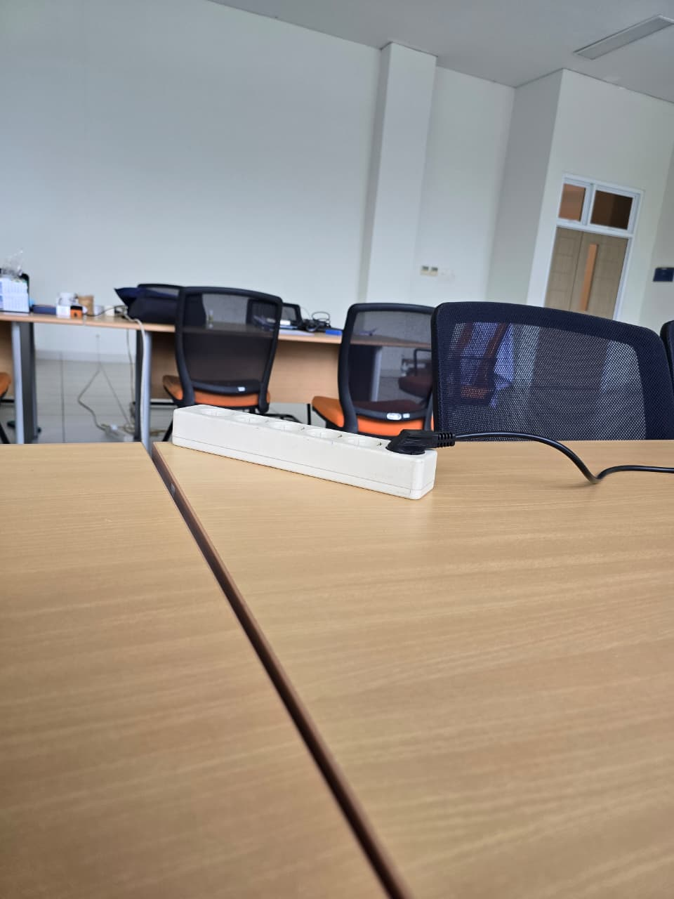

2. Gunakan tangga di samping lift untuk naik ke Lantai 2.

1. Masuk dari pintu utama, jalan lurus ke arah lift.
2. Gunakan tangga di samping lift untuk naik ke Lantai 2.

3. Setelah sampai di lantai 2, belok kiri. Lab LPIG ada di depan Anda.